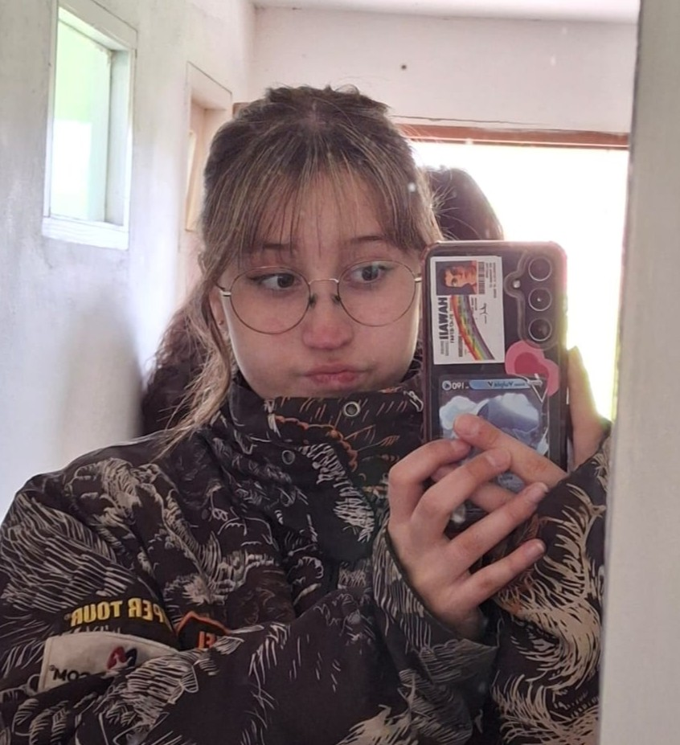

Camila Vander Ploeg
Holi, soy Cami. Elegí Informática por el turno y porque mi yo de 3ero tenía la esperanza de crear al menos un videojuego. Ahora que ya estoy en 6to, no quiero crear ningún videojuego ni ninguna página más; sin embargo, no me arrepiento de nada, porque todo este recorrido fue una experiencia inolvidable. Hablando de videojuegos: jugar a la computadora y al vóley son dos cosas que me apasionan. También voy a coro y teatro, y de vez en cuando voy a la iglesia (poco y nada, cuando pinta). Amo estar con mis mascotas, especialmente las perras (eso incluye a mis amigas).
Soy alérgica e intolerante a la vida misma; todos los días las chicas me jodían por eso, pero en realidad estoy agradecida. Ahora no lo veo como algo malo: me hace pensar en ellas y eso me alegra sobremanera. Este año me siento realizada: hice un montón de amigos nuevos, mejoré en aspectos deportivos, adopté más mascotas de las que debería y cerré todas las noches de Bariloche (a cambio de intramuscular). Estoy mega agradecida con la gente que me acompañó durante todo este año, especialmente con quienes se quedaron en los momentos más difíciles. Gracias <33


Mis recuerdos favoritos
- Todas las jodas
- Coro y teatro
- Jugar al voley en los recreos
- Los desayunos con las chicas
Cúspide de la música
Mis peliculas y series favoritas

Lo que pienso de mi futuro...
Preguntitas!!
Poner la cola en la silla y estudiar... Y a no juzgar a las personas, si no a darles una chance.
Siempre entreguen los TP de física y nunca sean prejuiciosos
Voy a extrañar MUCHÍSIMO a mis amigos, de la escuela ya tuve demasiado